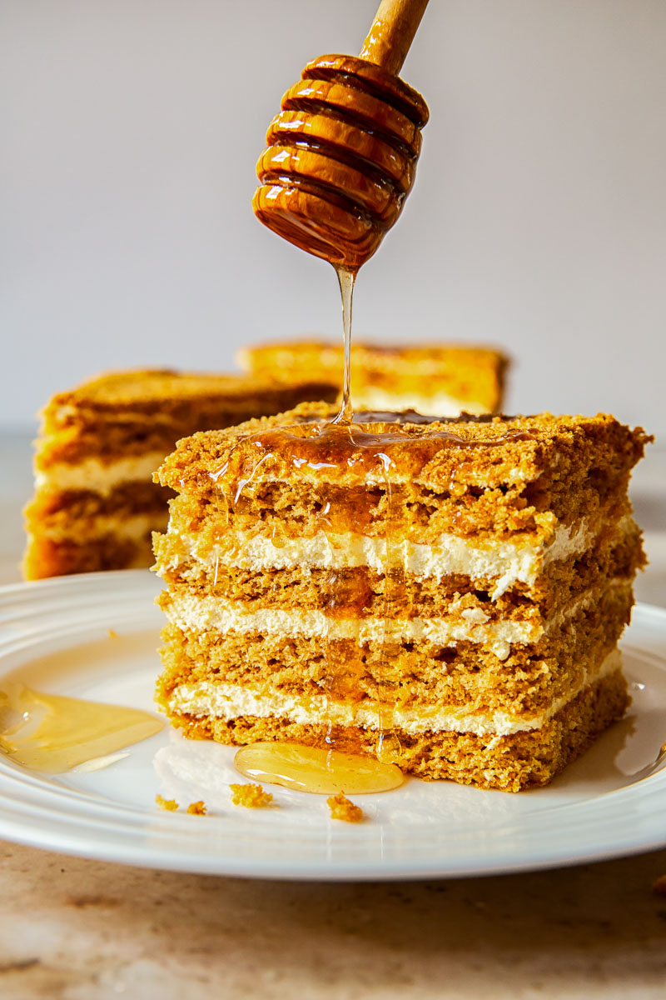

Russian Honey Cake
Recipe by Chef John

Medovik, a Russian layer cake made with honey and sweetened sour cream, was purportedly invented by a cook in the household of Tsar Alexander I who was seeking to win over Tsarina Elizabeth Alexeievna, who famously hated honey.
The secret to this cake's fantastic flavor is the tiny amount of bitterness from burnt honey. The slightly tangy whipped cream frosting provides a bit of acidity and lovely light texture, and unlike other frostings, it's not too sweet.
Ingredients
Burnt Honey:
- 3/4 cup wildflower honey
- 3 Tbsp cold water
Cake Layers:
- 1 cup white sugar
- 14 Tbsp unsalted butter, cut into slices
- 3/4 cups wildflower honey
- 2 1/2 tsp baking soda
- 1 tsp ground cinnamon
- 3/4 tsp fine salt
- 6 large cold eggs
- 3 3/4 cups all-purpose flour
Frosting:
- 4 cups cold heavy whipping cream
- 3/4 cups sour cream
Directions
- Gather all ingredients. Preheat the oven to 375 degrees F (190 degrees C). Line a baking sheet with a silicone baking mat. Place a mixing bowl and whisk in the refrigerator.
- Pour 3/4 cup wildflower honey into a deep saucepan over medium heat. Boil until a shade darker and caramel-like in aroma, about 10 minutes. Turn off heat and whisk in cold water.
- Place a large metal bowl over the lowest heat setting on the stovetop. Add sugar, butter, 3/4 cup wildflower honey, and 1/4 cup burnt honey. Let sit until butter melts, 5 to 7 minutes. Reserve remaining burnt honey for the frosting.
- Meanwhile, combine baking soda, cinnamon, and salt in a small bowl.
- Whisk butter mixture and let sit until very warm to the touch. Whisk in eggs. Keep mixture over low heat until it warms up again, then whisk in baking soda mixture. Remove from heat.
- Sift in flour in 2 or 3 additions, stirring well after each, until batter is easily spreadable.
- Transfer about 1/2 cup batter onto the prepared baking sheet. Spread into an 8- or 9-inch circle using an offset spatula. Shake and tap the pan to knock out any air bubbles.
- Bake in the preheated oven until lightly browned, 6 to 7 minutes.
- Remove liner from the pan and let cake layer continue cooling until firm enough to remove, 6 to 7 minutes. Invert cake onto a round of parchment paper.
- Repeat Steps 6 and 7 until you have 8 cake layers, letting each cool on an individual parchment round. Trim edges using a pizza wheel to ensure they are the same size; save scraps for crumb mixture.
- Spread any remaining batter onto the lined baking sheet. Bake in the preheated oven until edges are dry, about 10 minutes. Remove from the oven and cut into small pieces; toss with reserved cake scraps.
- Return scraps to the oven and bake until browned, 7 to 10 minutes more. Let cool completely, 15 to 20 minutes. Transfer to a resealable bag and beat into fairly fine crumbs using a rolling pin. Set aside.
- Remove the bowl and whisk from the refrigerator. Pour in heavy cream and whisk until soft peaks form. Add sour cream and remaining burnt honey; continue whisking until stiff peaks form.
- Place a cake layer on a parchment paper round on a pizza pan or serving plate. Spread a cup of frosting evenly on top, almost to the edge. Repeat with cake layers and frosting, pressing layers in smooth-side down. Place the last cake layer smooth-side up.
- Frost top and sides of cake. Cover with crumbs; clean any excess crumbs around base.
- Cover with plastic wrap and refrigerate for at least 8 hours to overnight. Transfer to a cake stand using 2 spatulas. Cut and serve.
Chef's Note
Any type of honey will work in this recipe.
You can bake multiple cake layers simultaneously, depending on how many silicone liners and baking sheets you have.
You can use an electric mixer for the frosting if you prefer.